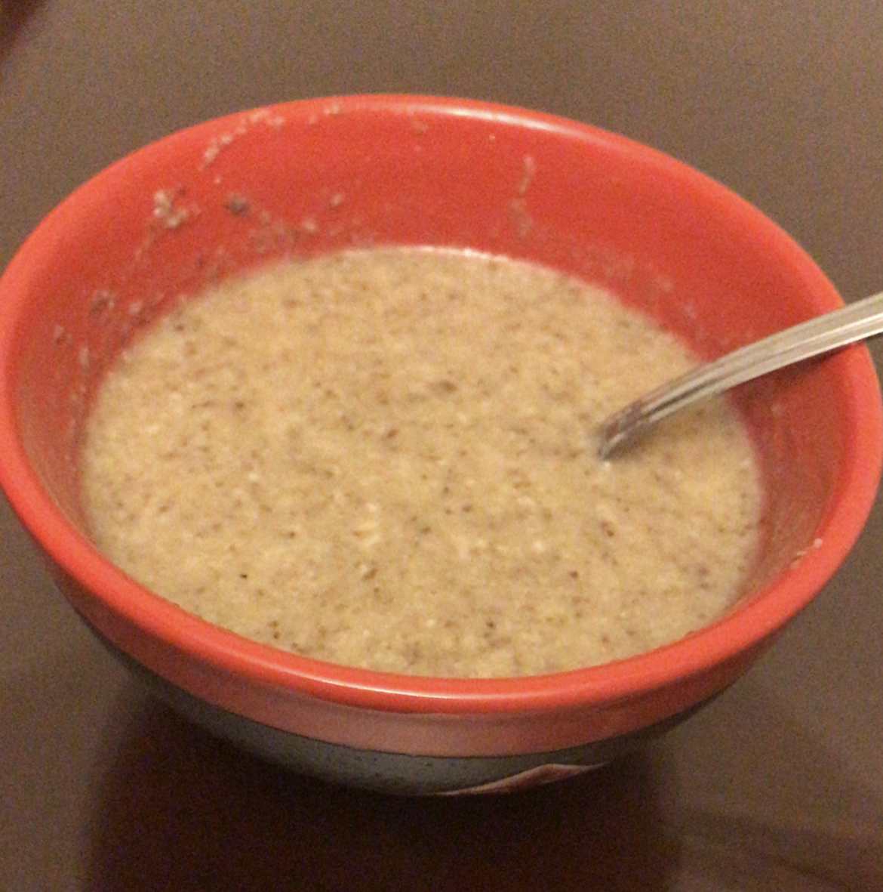

Chef Cai's Mushroom Soup

Description
Ingredients
- 1 medium diced onion
- 400 grams of sliced fresh mushrooms - shitake/portebello
- 1 knob of butter
- 1 1/2 tablespoons of all-purpose flour
- 1 teaspoon of dried thyme
- 2 cloves of garlic
- 4 cups of chicken broth
- 1 cup of water
- 1/2 cooking cream
Steps
- Melt butter in a large soup pot. Saute mushrooms and add a pinch of salt until the mushrooms release their juices. Take about 10 minutes.
- Reduce heat to medium low and continue to cook, evaporating the liquid and caramelizing mushrooms (about 15 minutes).
- Add diced onions into pot and cook till onions are soft and translucent, about 5 minutes
- Stir in flour into the pot and cook, stirring often, for about 2 minutes
- Add water, chicken broth, thyme and garlic into the pot and simmer for 20 minutes.
- Puree soup with blender until smooth and thick. Taste and add more water as necessary. Stir in cream. Season with salt and pepper
- Soup is ready to be served
Return to homepage